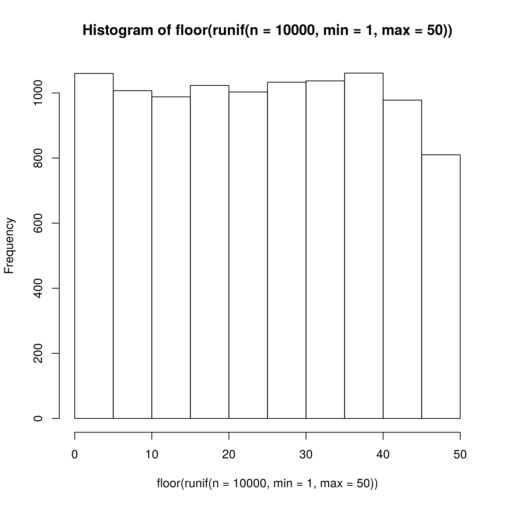
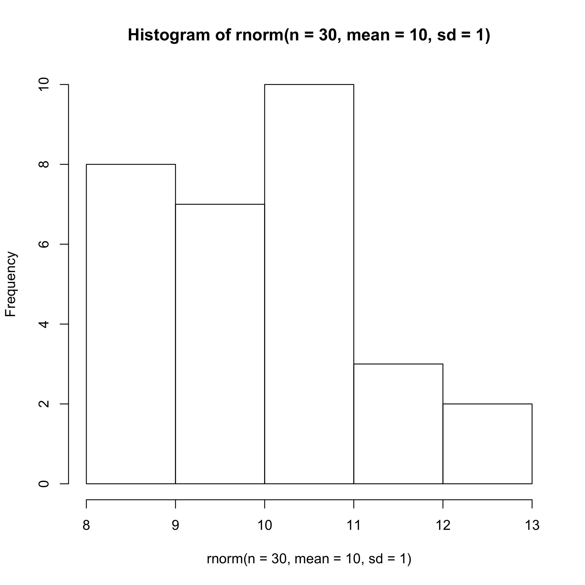
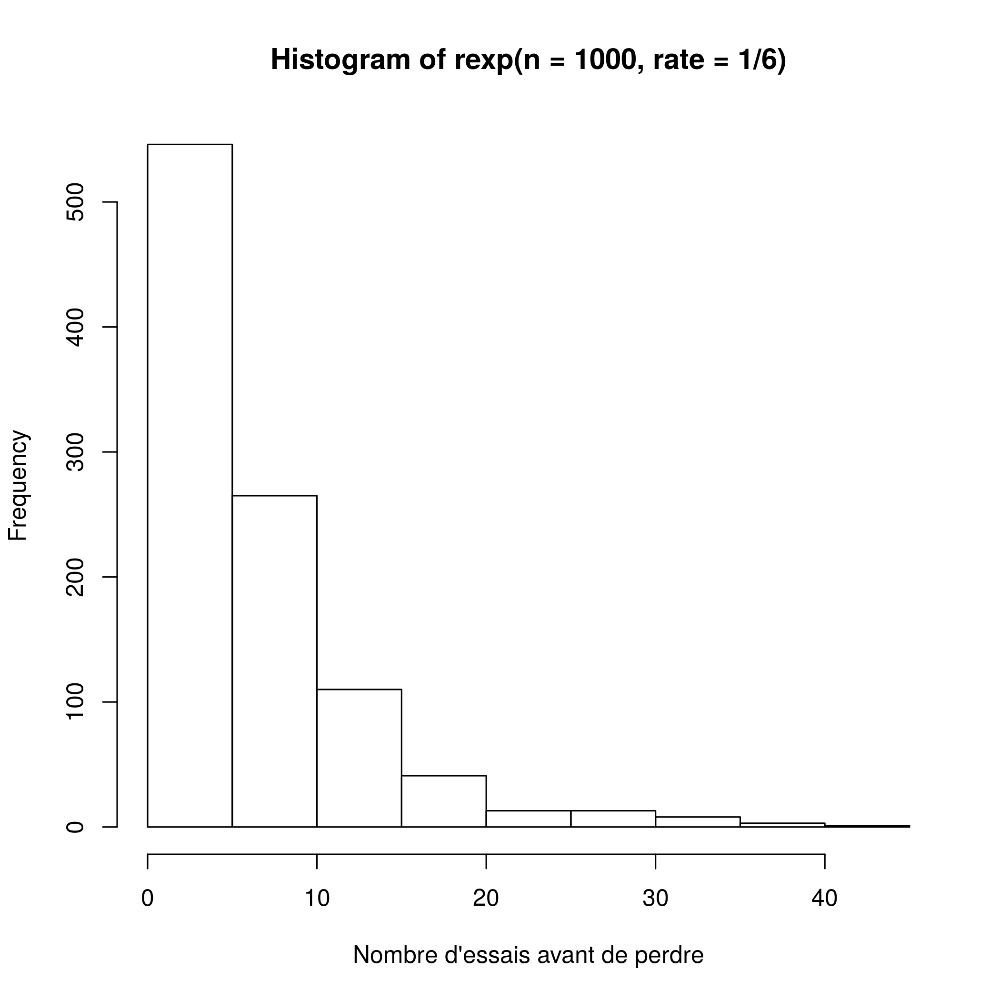
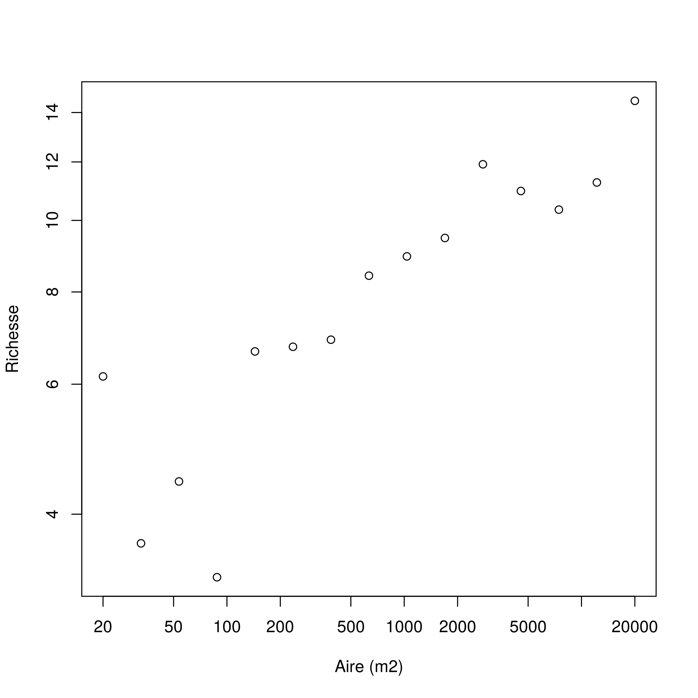
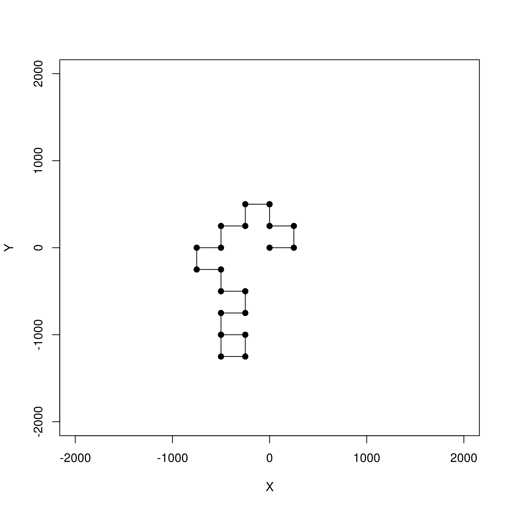
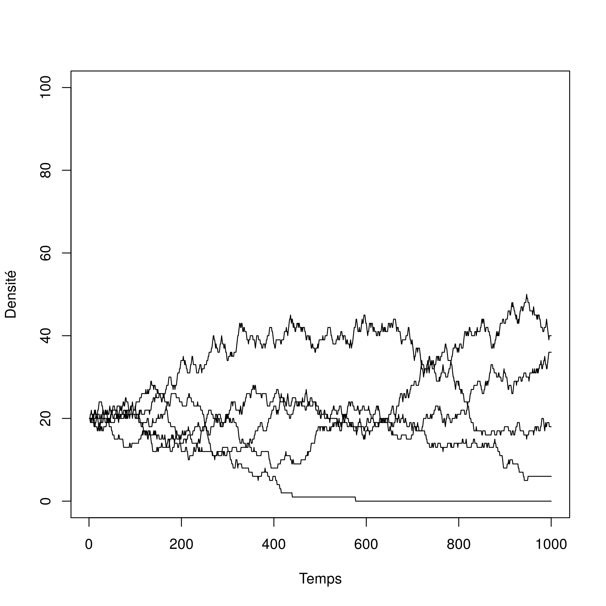

Séance 5: Algorithmique II
https://econumuds.github.io/BIO109/cours5/
Dominique Gravel
Laboratoire d'écologie intégrative
Solution du tri
Solution
tri <- function(x){
# Calcul de la dimension du vecteur
taille = length(x)
ordre = "OUI"
# Boucle qui tourne jusqu'à ce que tout soit en ordre
while(ordre == "OUI") {
ordre = "NON"
# Boucle qui passe tous les éléments en paire
for(i in 1:(taille-1)) {
if(x[i+1] < x[i]) {
# Inversion des deux lettres
x[c(i,i+1)] = x[c(i+1,i)]
# Comme un changement a été fait, l'ordre
# n'est pas encore garanti
ordre = "NON"
}
}
}
return(x)
}
Les jeux de hasard
Les jeux de hasard

Le hasard et l'écologie
La dynamique de populations

Le hasard et l'écologie
Les populations structurées par la taille
Le hasard et l'écologie
Écologie du paysage

Le hasard et l'écologie
Mouvement des individus

Le hasard et l'écologie
Statistiques

Application 1: échantillonner un vecteur
Exemple : tirer une carte au hasard
Exemple : votre jeu de cartes sur R
La fonction sample()
valeurs = c("2", "3", "4", "5", "6", "7", "8", "9", "10", "valet", "reine", "roi", "as")
couleurs = rep(c("pique", "trèfle", "carreau", "coeur"),each = 13)
cartes = paste(valeurs,"-",couleurs)
tirage = function(n, cartes) {
sample(x = cartes, size = n, replace = FALSE)
}
tirage(3, cartes)
## [1] "9 - carreau" "9 - pique" "5 - coeur"
Exercice
Vous trouverez les lettres du scrabble dans le fichier lettres.txt. Vous pouvez les charger et programmer votre fonction qui vous pigera au hasard les 7 lettres pour ce jeux.
Application 2: échantillonner une loi de probabilité
Principe
Plutôt que de tirer un élément d'une série de chiffres ou de caractères, on peut échantillonner une loi de probabilité dont les propriétés sont connues. Fort heureusement, la plupart de ces lois de probabilité sont déjà programmées. Certaines sont intuitives et déjà utilisées dans des jeux de hasard.
La lotto 6/49
La loi uniforme

hist(floor(runif(n = 10000, min = 1, max = 50)))

Le jeu de la courte paille
La loi normale

hist(rnorm(n = 30, mean = 10, sd = 1))

Une pièce de monnaie
La loi binomiale
rbinom(n = 10, size = 1, prob = 0.5)
## [1] 1 0 1 0 0 0 0 1 0 1
Les dés
La loi multinomiale

rmultinom(n = 3, size = 1, prob = rep(1/6, 6))
## [,1] [,2] [,3]
## [1,] 0 0 0
## [2,] 0 0 1
## [3,] 1 0 0
## [4,] 0 0 0
## [5,] 0 1 0
## [6,] 0 0 0
La roulette russe
La loi exponentielle

hist(rexp(n = 1000, rate = 1/6),
xlab = "Nombre d'essais avant de perdre")

Critères de classification des lois de probabilité
- Type de variable : continue ou discrète
- Valeurs extrêmes : bornées ou non ?
- Forme de la distribution : centrée, biaisée
- Moments: moyenne, variance, kurtosis, skewness
Exercice
Une étude vous indique que la relation entre le nombre d'espèces de plantes et l'aire sur la placette de Sutton suit la relation suivante :
\[ S \sim N(\mu, \sigma) \]
Où
\[ \mu = cA^z \]
Vous trouvez dans la littérature des valeurs de paramètres de \(c = 3\), \(z = 0.15\) et \(\sigma = 1.5\). Illustrez des valeurs attendues sur ce modèle pour l'interval de \(A = [20, 20 000]\) correspondant à la dimension de la placette.
Solution
A = 2*10^seq(1, 4, length.out = 15)
c = 3
z = 0.15
S = rnorm(15, mean = c*A^z, sd = 1.5)
plot(A, S, xlab = "Aire (m2)", ylab = "Richesse",
log = "xy")

Application 3: prise de décision
Principe
L'épreuve de Bernoulli
- Une épreuve de Bernoulli est une expérience aléatoire (un tirage) avec deux issues : succès ou échec;
- Les épreuves sont indépendantes: l'issue d'une seconde épreuve ne dépend pas de la première;
- La probabilité de succès est représentée par le paramètre
p, alors que la probabilité d'un échec est représentée par1-p;
Principe
L'épreuve de Bernoulli
Exemple des jeux de hasard: la pièce de monnaie
Exemples en écologie:
- la mortalité;
- la détermination du sexe;
- l'occurrence d'un incendie forestier;
- la contamination par un virus après le contact entre une personne infectée et une personne susceptible;
Simuler un tirage de Bernoulli
Lorsque \(p = 0.5\), on tire une pièce de monnaie. Mais qu'en est-il si la pièce est biasée, par exemple si la face est plus lourde et donc la probabilité d'obtenir pile est de \(p = 0.55\) ?
set.seed(1)
p <- 0.55
alea <- runif(n = 1, min = 0, max = 1)
if(alea < p) res = "pile" else res = "face"
res
## [1] "pile"
En d'autres mots...
Si \(U\) est une variable aléatoire distribuée selon la loi uniforme entre 0 et 1, alors la chance que \(U < p\) est exactement de valeur \(p\). Si on réalise \(n\) tirage, alors l'espérance du nombre de succès est exactement \(np\).
Un exemple vaut mille mots
- Tirez au hasard 1000 chiffres de la loi uniforme bornée entre 0 et 1
- Créez un vecteur 'res' rempli de 0 et de 1000 unités de longueur
- Pour chaque valeur de la séquence, évaluez si le chiffre est plus petit que la valeur seuil de \(p = 0.2\). Si la valeur est plus petite, inscrivez 1 dans le vecteur 'res' à la position correspondante
- Combien de fois est-ce que la valeur est inférieure à \(p\) ?
- Essayez à nouveau et comparez.
Un exercice est encore plus efficace...
Vous observez une personne ivre à la sortie d'un bar prendre sa voiture. Vous appelez la police pour l'avertir. Estimez la distance parcourue par ce conducteur en 10 minutes, sachant que :
- Le quartier où vous vous trouvez est un plan cartésien parfait (une grille régulière) composé de blocs de 250 m;
- À chaque intersection, votre conducteur ivre tourne à gauche ou à droite avec une probabilité de 0.5;
- Il faut environ 30 secondes à votre conducteur pour parcourir la distance entre deux arrêts.
Calculez la distance parcourue en X et en Y, puis reprenez votre calcul une centaine de fois pour estimer la distance moyenne parcourue (à vol d'oiseau).
Solution
nsteps = 20
xy = matrix(0,nr = 21, nc = 2)
xy[1,] = c(0,0)
direction = 0
set.seed(2)
for(step in 2:(nsteps+1)) {
# Ḑe quel côté tourner ?
if(runif(1,0,1) < 0.5) {
# Tourne à droite
direction = direction + pi/2
}
else {
# Tourne à gauche
direction = direction - pi/2
}
# Calcul des nouvelles coordonnées
xy[step,1] = xy[step-1,1] + sin(direction)*250
xy[step,2] = xy[step-1,2] + cos(direction)*250
}

La loi multinomiale
La situation se complique lorsqu'il y a plus que 2 résultats possibles à notre épreuve aléatoire. Par exemple, le conducteur peut tourner à gauche avec une probabilité de 0.25, poursuivre en ligne droite avec une probabilité de 0.5 ou encore tourner à droite avec une probabilité de 0.25.
La loi multinomiale est une généralisation de la loi binomiale qui permet d'avoir plus de 2 résultats possibles
La loi multinomiale
La somme des probabilités d'observer chacun des événements doit être obligatoirement de 1.
Dans ce contexte, la décision est prise en comparant la valeur aléatoire à la distribution cumulative, pour chacun des événements possibles.
Prenons la séquence de probabilités \(p = \{0.25, 0.5, 0.25 \}\).
- La distribution cumulative des événements est de \(\{0.25, 0.75, 1\}\).
- La décision est prise en tirant un chiffre au hasard et en trouvant où il se situe dans cet intervalle.
Exemple
etats <- c("A", "B", "C", "D", "E")
p = c(0.1, 0.5, 0.2, 0.05, 0.15)
sum(p)
## [1] 1
# On utilise cumsum pour calculer la probabilité cumulative
cump <- cumsum(p)
cump
## [1] 0.10 0.60 0.80 0.85 1.00
Exemple
alea <- runif(1,0,1)
alea
## [1] 0.6618988
n_etats <- 5; i = 1; plus_petit = FALSE
while(plus_petit == FALSE) {
if(alea < cump[i]) {
decision = etats[i]
plus_petit = TRUE
}
else {
i = i + 1
}
}
decision
## [1] "C"
Une façon plus rapide d'y arriver ....
Profitons de la fonction rmultinom() qui simplifie les opérations
tirage <- function(p) {
etats <- c("A", "B", "C", "D", "E")
res <- rmultinom(n=1,size=1,prob=p)
etats[which(res==1)]
}
tirage(p)
## [1] "E"
Exemple intégrateur
Le modèle de lotterie est à la base de nombreuses théories en écologie. Le travail final de ce cours en sera d'ailleurs fortement inspiré.
Imaginez une forêt où un nombre limité d'arbres peuvent atteindre la canopée. Ce nombre est constant dans le temps puisque, lorsque survient une petite perturbation qui crée une ouverture, un seul individu viendra remplacer l'arbre qui est mort.
Exemple intégrateur
Le nom de "lotterie" vient de la façon dont s'effectue le recrutement. Imaginez que l'on place une trappe à graines au centre de l'ouverture et que l'on pige une semence au hasard dans cette trappe, pour la placer ensuite dans le sol. La probabilité de recrutement d'une espèce, \(p_i\), est tout simplement égale à son abondance relative dans la forêt avoisinante, soit \(N_i /K\), où \(N_i\) est le nombre d'individus de l'espèce \(i\) et \(K\) est le nombre total d'individus dans la forêt.
Exemple intégrateur
Le vecteur \(N\) représente le nombre d'individu de chaque espèce. Les étapes de la simulation du modèle de lotterie sont les suivantes, à chaque pas de temps :
- Identification de quel arbre meurt (on en pige un seul au hasard parmi les \(K\) arbres)
- Retrait d'un individu de cette espèce (\(N_i-1\))
- Calcul de l'abondance relative de chaque espèce (\(N_i /K\)).
- Identification de l'espèce recrutée
- Ajout d'un individu de cette espèce (\(N_i+1\))
Solution
nsteps <- 1000
S <- 5
K <- 100
N <- matrix(nr = nsteps, nc = S)
# Une fonction utile pour faire des tirages
# Elle retourne la position de l'espèce pigée au hasard
tirage <- function(p) {
res <- rmultinom(n=1,size=1,prob=p)
return(which(res==1))
}
Solution
# On démarre la simulation avec 20 individus par espèce
N[1,] =rep(K/S, S)
# La boucle principale
for(step in 2:nsteps) {
# Calcul de l'abondance relative
p = N[step-1,] / K
# On tire l'identité de l'espèce qui meurt
ID_mort = tirage(p)
# On applique le changement
N[step,] = N[step-1,]
N[step,ID_mort] = N[step,ID_mort] - 1
# On tire l'identité de la recrue
ID_recrue = tirage(p)
N[step,ID_recrue] = N[step,ID_recrue] + 1
}
Solution

Optimisation des scripts
Optimisation
R est un langage de programmation et peut donc faire à peu près tout ce que l'on fera avec d'autres langages de programmation. Mais il a d'abord et surtout été développé pour l'analyse statistique de données. Par conséquent, il peut être assez lent pour réaliser certaines opérations.
L'optimisation de code peut être réalisée de différentes façons:
- Trouver les portions de code qui prennent le plus de temps ;
- Profiter de la structure de R (vectorielle) afin d'accéléer le calcul ;
- Écrire ses propres fonctions en C pour les portions les plus exigeantes ;
Référence
L'optimisation est un sujet avancé que nous ne couvrirons pas en détails dans le cours. Il est recommandé cependant d'aller consulter l'excellente référence sur le sujet :
Visser, M.D., McMahon, S.M., Merow, C., Dixon, P.M., Record, S., Jongejans., E. 2015. Speeding up ecological and evolutionary computations in R; Essentials of high performance computing for biologists. PLoS Computational Biology 11: e1004140.
Calculer le temps écoulé
La fonction system.time() est un minimum pour tester la performance d'un code. Par exemple, on peut comparer la performance de notre fonction de tri à celle qui est native sur R.
x = runif(1000)
system.time(sort(x))
## user system elapsed
## 0 0 0
system.time(tri(x))
## user system elapsed
## 0.012 0.000 0.013
Calculer le temps écoulé
Certaines opérations peuvent dépendre de la taille de l'objet (ci-dessous, res)
n = 2*10^seq(1,3,0.1)
res = numeric(length(n))
for(i in 1:length(res)) {
x = runif(n[i])
res[i] = system.time(tri(x))[3]
}
plot(n,res, type = "l", xlab = "Taille",
ylab = "Temps")

Vectorisation
L'utilisation d'opérations vectorielles plutôt que les boucles augmente l'efficacité du code.
f1 <- function(x) {
taille <- length(x)
x2 <- numeric(taille)
for(i in 1:taille) if(x[i] < 0.5) x2[i] <- 1
}
f2 <- function(x) {
x2 <- x*0
x2[x<0.5] <- 1
}
x = runif(1000000)
system.time(f1(x))
## user system elapsed
## 0.068 0.004 0.071
system.time(f2(x))
## user system elapsed
## 0.040 0.004 0.043
Utilisation de fonctions natives
Certaines fonctions sur R (voir Visser et al. 2015) sont optimisées. L'exemple suivant montre la puissance de la fonction rowSums().
f1 <- function(x) {
res <- numeric(ncol(x))
for(j in 1:ncol(x)) {
for(i in 1:nrow(x)){
res[x] = res[j] + x[i,j]
}
}
}
X = matrix(runif(100*100),nr=100,nc=100)
system.time(rowSums(X))
system.time(apply(X,2,sum))
system.time(f1(X))
## user system elapsed
## 0 0 0
## user system elapsed
## 0 0 0
## user system elapsed
## 0.472 0.000 0.472
Exercice final
Répartition des domaines bioclimatiques

La distribution des arbres à Sutton

Un modèle de communauté

Répartition des états
Les différents états
- 'B' si présence de abba ou piru
- 'T' si présence de acsa ou beal ou fagr
- 'M' si présence de (abba ou piru) et (acsa ou beal ou fagr)
- 'R' si aucun de ces critères n'est rempli
Le code pour générer la figure
coordx <- seq(0,180,20)
coordy <- seq(0,980,20)
paysage <- tapply(etats,INDEX = quadrats[,c(1:2)],sum)
par(mar = c(4,4,3,0.5))
image(x=coordx,y=coordy,z=paysage,xlab=NULL,ylab=NULL,
col=c("black","orange","darkcyan","palegreen3"))
La matrice de transition entre les différents états
\[ \begin{bmatrix} P(B_{t+1}|B_t) & P(M_{t+1}|B_t) & P(T_{t+1}|B_t) & P(R_{t+1}|B_t) \\ P(B_{t+1}|M_t) & P(M_{t+1}|M_t) & P(T_{t+1}|M_t) & P(R_{t+1}|M_t) \\ P(B_{t+1}|T_t) & P(M_{t+1}|T_t) & P(T_{t+1}|T_t) & P(R_{t+1}|T_t) \\ P(B_{t+1}|R_t) & P(M_{t+1}|R_t) & P(T_{t+1}|R_t) & P(R_{t+1}|R_t) \\ \end{bmatrix} \]
Se lit ainsi: la rangée correspond à l'état au temps t et la colonne correspond à l'état au temps t+1. Une ligne de ce tableau correspond à un vecteur de probabilités d'une distribution multinomiale. Donc, la somme d'une rangée doit être égale à 1.
La matrice de transition entre les différents états
\[ \begin{bmatrix} 0.9125 & 0.0866 & 0.0000 & 0.0009 \\ 0.0004 & 0.8652 & 0.1254 & 0.0090 \\ 0.0000 & 0.0350 & 0.9213 & 0.0437 \\ 0.0001 & 0.0020 & 0.0011 & 0.9968 \\ \end{bmatrix} \]
Notez que l'intervalle de temps entre deux épisodes est 5 ans.
Une entrée \(P(B_{t+1} | T_t)\) se lit comme "la probabilité qu'un quadrat occupé par l'état T au temps t soit occupé par l'état B au temps t+1".
ATTENTION !
Bien qu'il y ait de nombreuses similarités avec le modèle de lotterie, il ne s'agit pas du même modèle. Ainsi, les étapes de mortalité et de recrutement sont combinées dans une seule étape où sont remplacés automatiquement les états d'un pas de temps à l'autre et où les probabilités sont toujours les mêmes (elles ne changent pas avec l'abondance relative).
Question de recherche
Quelle sera la distribution de la forêt tempérée au sein de la Réserve écologique des Montagnes vertes dans 100 ans ?
Données
- Distribution initiale de la végétation dans le fichier quadrats.csv
- Matrice de transition entre les 4 états dans le fichier matrice_transitions.txt
Étapes du travail
- Transformer les abondances en états de départ
- Préparer une fonction qui tire au hasard l'état au temps t+1 en fonction de l'état au temps t
- Préparer une fonction qui fait une simulation sur N pas de temps
- Utiliser la sortie de la fonction pour répondre à deux questions au moyen d'une figure : i) est-ce que les espèces de conifères seront toujours présentes dans le futur ? ii) combien de temps sera nécessaire pour que la forêt atteigne l'équilibre ?
Modalités
- Le travail se réalisera en équipe de 4
- Le travail doit être remis électroniquement au plus tard le 19 février 16:00 sur Moodle
- Vous devez remettre:
- Le pseudo-code pour la fonction principale qui réalise votre simulation
- Le script qui exécute votre code, de la lecture du fichier de départ jusqu'à la production des figures.
- Attention à la reproductibilité !
Critères d'évaluation
- Respect des bonnes pratiques enseignées dans le cours (40%)
- Exécution des différentes étapes du code (40%):
- Transformation des données sous forme d'états
- Programmation de la simulation sous forme d'une fonction ré-utilisable
- Réalisation de la simulation stochastique (tirage des transitions)
- Réalisation des figures
- Capacité d'exécuter le code de A à Z, soit de la lecture du fichier de données jusqu'aux deux figures finales (20 %).